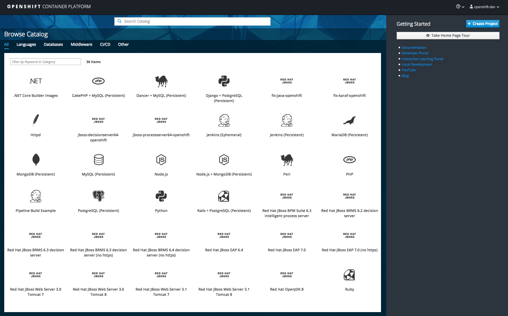

DESTINASIA SERIVCES TEAM
This workshop you become the lead developer who sets up a development environment for the Cloud
hosted containerized application services for end-to-end testing. This entails installing OpenShift
Container Platform (OCP), JBoss Enterprise Application Platform (EAP), JBoss Business Rules Management
System (BRMS), several containerized web services and test the end-to-end solution using a REST
client.
You will need to ensure that you have been given an USB (by the instructor) with the pre-requisites,
or ensure you have internet access for downloading them.
Pre-requisits: Laptop with 16GB RAM, Docker 1.13, OCP 3.4, JBoss EAP 7.0, JBoss BRMS 6.4
ARCHITECTURE
Destinasia service deployment overview
Lab 1
Install OpenShift Container Platform
Lab Goal
To install and login to OpenShift Contianer Platform

ARCHITECTURE
Installing OpenShift Container Platform

INSTALL OCP
- Download ocp-install-demo and unzip
- Run init.sh or init.bat (Windows admin privileges)
$ unzip ocp-install-demo-master.zip$ cd ocp-install-demo-master$ ./init.{sh|bat}- See next slides for dealing with any issues
ISSUES: VIRTUALBOX
Possible Mac error:
Fix:
VirtualBox is required but not installed yet... download here: https://www.virtualbox.org/wiki/Downloads
Fix:
- Download and install VirtualBox as indicated.
ISSUES: DOCKER
Missing:
Fix:
Docker is required but not installed yet... download here: https://drive.google.com/open?id=0B9WSViV5BZ4aVXV5U3F4LVVmWVk
Fix:
- Download, install and start Docker version 1.13
ISSUES: DOCKER
Not running:
Fix:
Docker is installed... checking for valid version...Docker deamon is not running... please start Docker for osX...Docker deamon is not running... or is running insecurely...Check for instructions at: https://docs.docker.com/linux
Fix:
- Download, install and start Docker version 1.13
ISSUES: DOCKER
Version problems:
Fix:
Docker engine version X.X found... need 1.13, please update: https://drive.google.com/open?id=0B9WSViV5BZ4aVXV5U3F4LVVmWVk
Fix:
- Download, install and start Docker version 1.13
ISSUES: OC CLIENT
Missing:
Fix:
OpenShift CLI tooling is required but not installed yet... download here: https://drive.google.com/open?id=0B9WSViV5BZ4aVXV5U3F4LVVmWVk
Fix:
- Download and install OpenShift oc client.
ISSUES: OC CLIENT
Version:
Fix:
OpenShift command line tools installed... checking for valid version...- Version of installed OpenShift command line tools is vX.X.X, must be v3.4.1 or higher... Download for Mac/Linux/Windows here: https://drive.google.com/open?id=0B9WSViV5BZ4aVXV5U3F4LVVmWVk
Fix:
- Download and install OpenShift oc client.
WATCHING INSTALL LOG
OCP image downloaded and installed...

WATCHING INSTALL LOG
Starting OCP image and getting IP address...
WATCHING INSTALL LOG
Adding JBoss images to OCP...

WATCHING INSTALL LOG
Adding integration, S2I and decision server images to OCP...

WATCHING INSTALL LOG
Refreshing RHEL images to OCP...

WATCHING INSTALL LOG
Adding .Net images to OCP...

WATCHING INSTALL LOG
Final output with details to log in, note clean up commands....

LOG IN TO OCP
- http://192.168.99.100:8443
- user:
openshift-dev - password:
devel

END LAB 1
